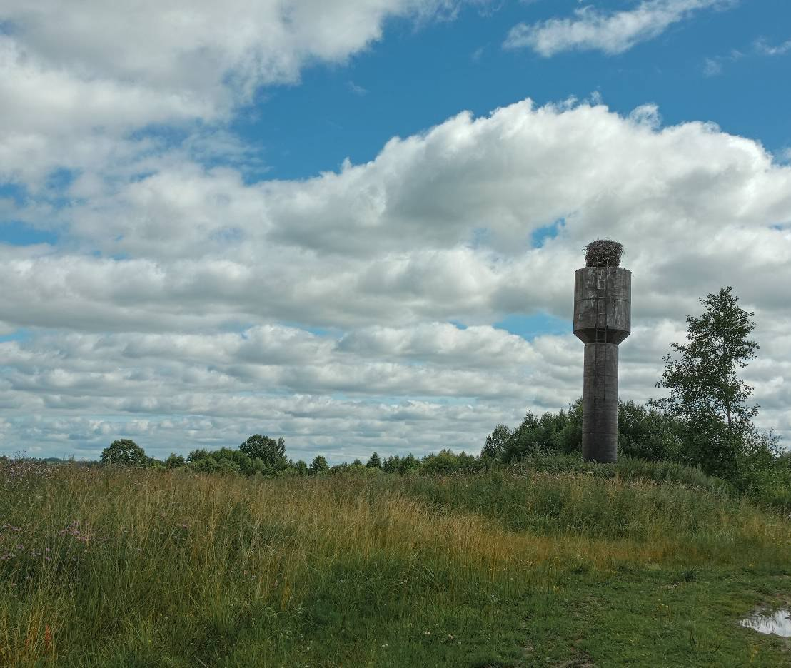
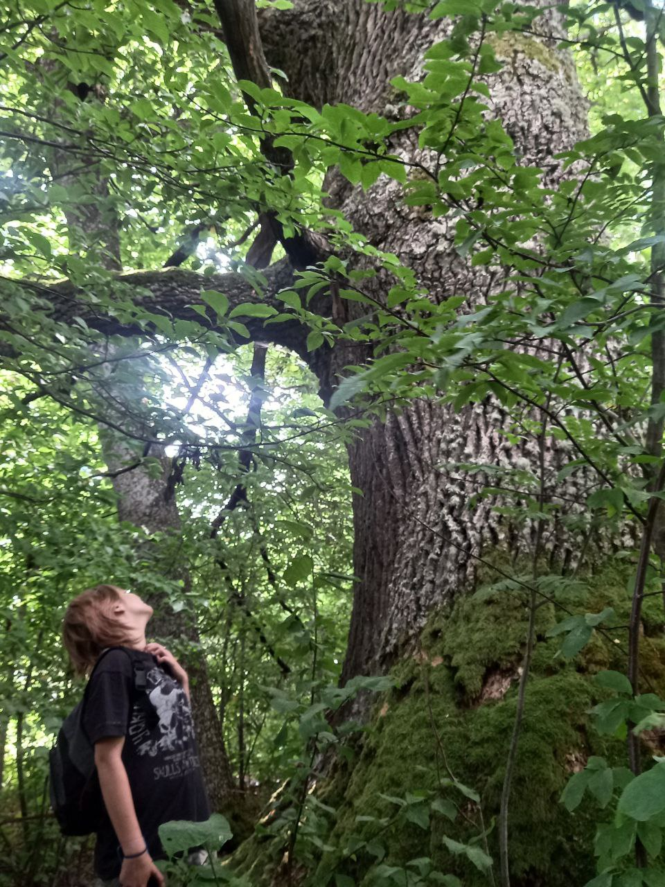
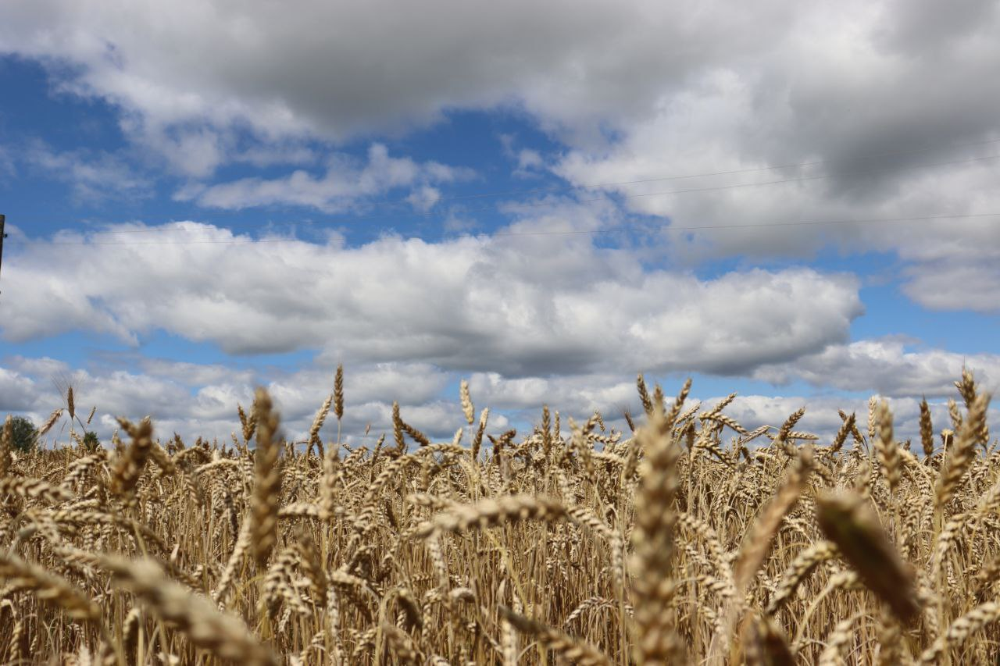
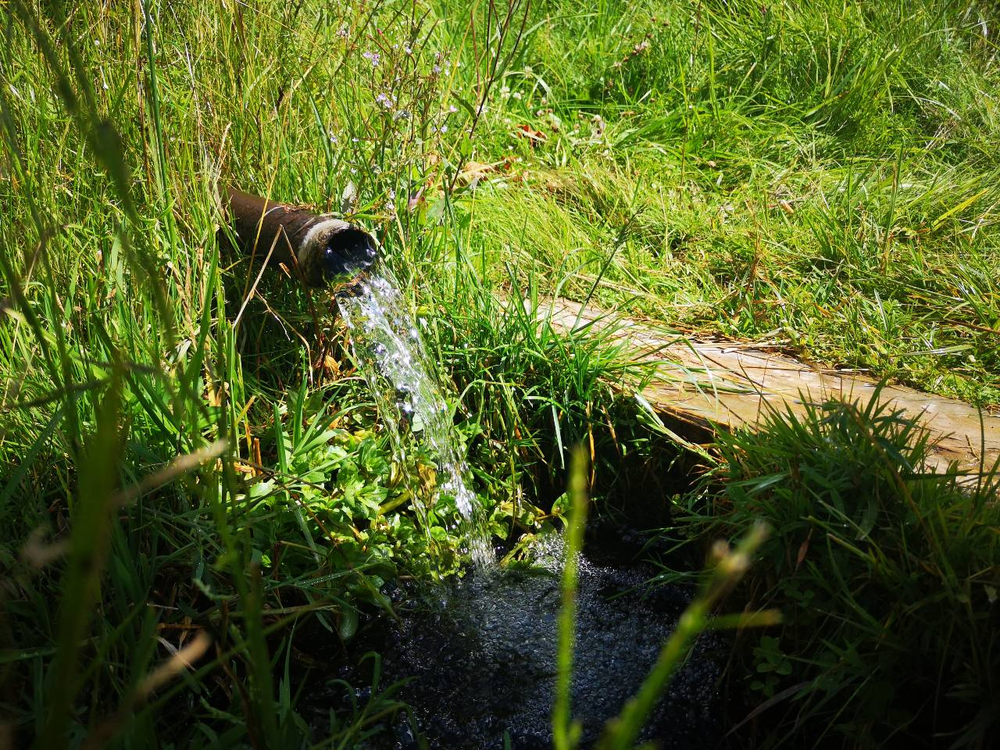

В деревне Белянишки стоит огромный, по свидетельству местных жителей 500-летний, дуб. Могучее дерево окутано легендами и историями, связанными с многими историческим личностями. А его кора и ветки приносят удачу до сих пор! Дуб является памятником природы. По словам местных жителей, его веточки и кора приносят удачу.
легенде, передававшейся из поколения в поколение, дуб посадили местные жители еще в 1510 году, когда на эти земли пришла Османская Империя. У дуба была землянка, где они прятались от врагов. Но есть и вторая версия происхождения дуба. По ней дуб посадили крымские татары в этом же столетии.

В 1812 году, во время Отечественной войны, возле дуба проходила армия Наполеона. Сейчас вы можете сделать эффектные фото у его подножья, присев на огромный корень и почувствовав себя полководцем! Во время восстания Т. Костюшки в 1794 году возле дуба остановился князь, дипломат, композитор М. К. Огинский. Он, участник восстания, шел со своим отрядом на теперешний Даугавпилс. Местные крестьяне рекомендовали взять ему кору и ветки дуба, т. к. они принесут ему удачу. Однако Огинский лишь посмеялся с их суеверий. После чего он потерпел сокрушительное поражение, несмотря на то что его войско превосходило войско противника. По легенде он вернулся к дубу попросить прощения и преподнести дары. Уезжая, он взял себе веточки и кору дуба, после чего всю жизнь его сопровождала удача: он избежал репрессий после поражения восстания, был помилован русским царем, а его музыка стала известна по всему миру.

На пути к дубу вы можете посетить родник с минеральной водой. Он находится возле старой водонапорной башни с огромным аистиным гнездом на ней. “Вода в источнике имеет постоянную температуру 7,5*C. Даже при самом лютом морозе источник не замерзает, и температура остается такой же,”- говорит краевед Алесь Гарбуль. Здесь вы можете отдохнуть и попить воды.
Если вам нужна помощь могучего дуба, вам обязательно нужно посетить это место! Удачи во всем!Записали Адотик Палина, Юркевич Алиса